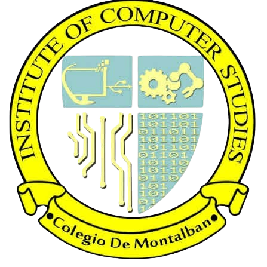
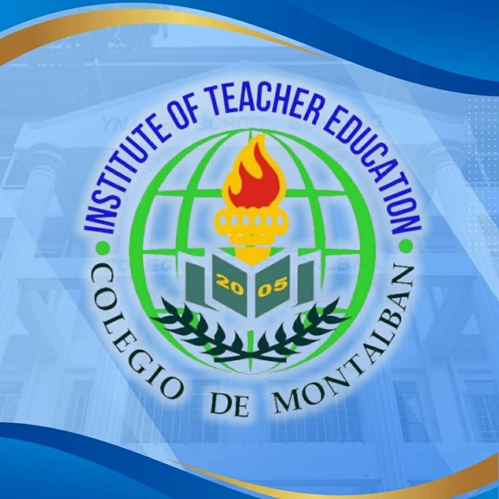

Institute of Computer Studies
●Bachelor of Science in Information Technology (BSIT)
●Bachelor of Science in Computer Engineering (BSCpE)

Institute of Teacher Education
●Bachelor of Secondary Education Major in Science (BSED sci)
●Bachelor of Early Childhood Education (BECEd)
●Bachelor of Elementary Education Major in General Education (BEED Gen)
●Bachelor of Technology and Livelihood Education major in ICT (BTLEd ICT)
Institute of Business and Entrepreneurship
●BS in Business Administration major in Human Resource Management (BSBA HRM)
●Bachelor of Science in Entrepreneurship (BS Entrep)